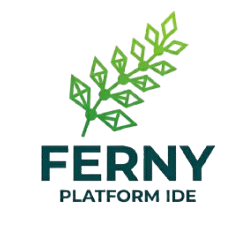

Ferny 0.5.0
Un editor para programadores inspirado en Geany.
Licencia: GNU General Public License, versión 2 o posterior.
Ayuda → Acerca de Ferny (en macOS, en el menú de la aplicación). Clic sobre cualquier parte muestra el objeto que la dibuja (clase Qt, nombre y archivo); Esc lo oculta. Todas las pantallas.

Un editor para programadores inspirado en Geany.
Licencia: GNU General Public License, versión 2 o posterior.